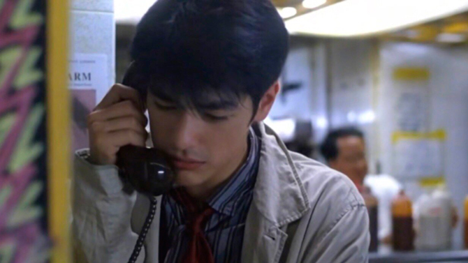

不知道從什麼時候開始，在什麼東西上面都有個日期，秋刀魚會過期，肉罐頭會過期，連保鮮紙都會過期，我開始懷疑，在這個世界上，還有什麼東西是不會過期的？
不知道是我不記得關水龍頭，還是這間屋越來越有感情，我一直以為它很堅強，沒想到它哭得最歷害，一個人哭，你只須要給他包紙巾，但一間屋哭，你卻要做很多很多工夫。
其實了解一個人並不代表什麼，人是會變的，今天他喜歡鳳梨，明天他可以喜歡別的。
知道什麼時候開始，我變成一個很小心的人，每次我穿雨衣的時候，我都會戴太陽眼鏡，你永遠都不會知道什麼時候會下雨，什麼時候出太陽。
看著它哭的時候，我很開心，因為它外表好像改變了，可是它的本質沒有變，它依然是一條感情豐富的毛巾。
那天下午我做了個夢，我到了他的家，走出那房子的時候，我以為我會醒來，誰知道，原來有些夢是永遠不會醒的。